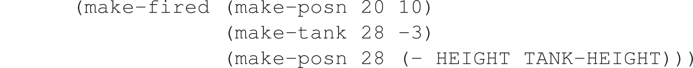
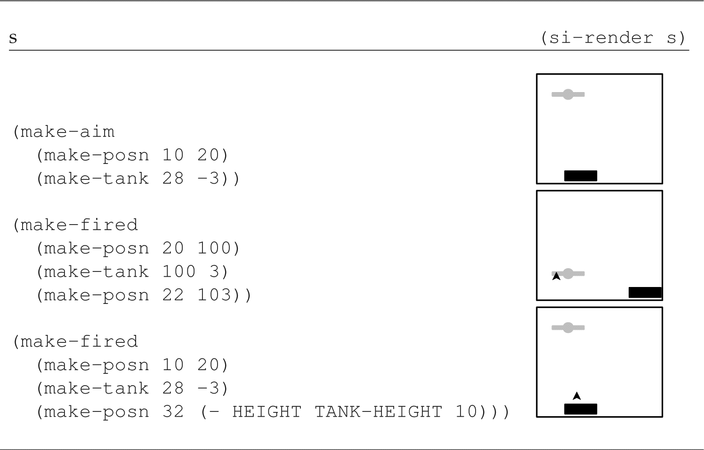
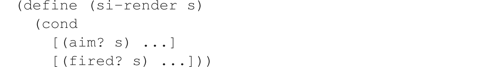
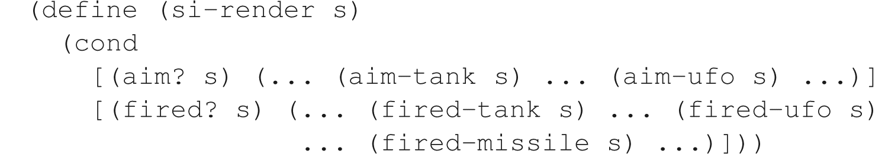
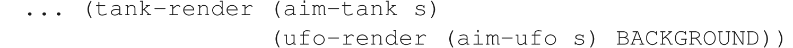
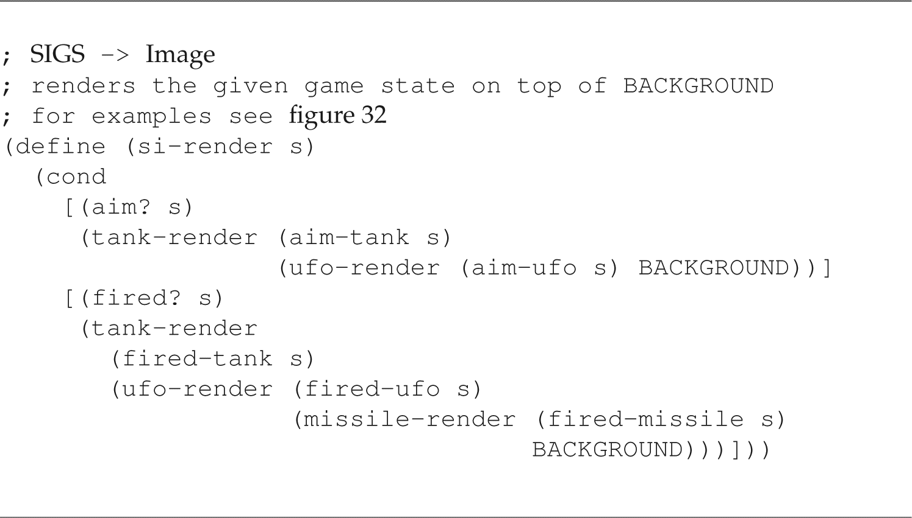
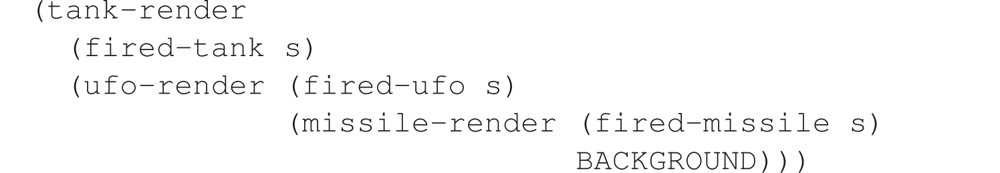
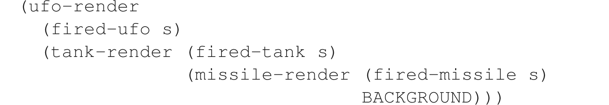
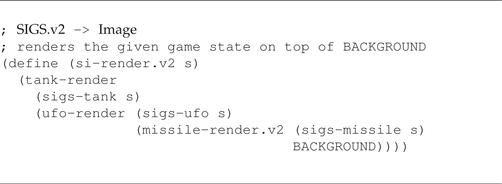
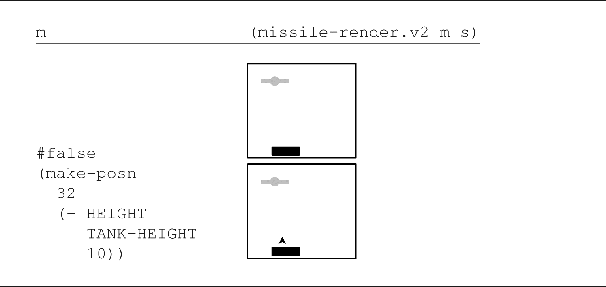

6.1 Designing with Itemizations, Again
Let’s start with a refined problem statement for our space invader game from chapter 5.6.
Sample Problem Design a game program using the 2htdp/universe library for playing a simple space invader game. The player is in control of a tank (a small rectangle) that must defend our planet (the bottom of the canvas) from a UFO (see chapter 4.4 for one possibility) that descends from the top of the canvas to the bottom. In order to stop the UFO from landing, the player may fire a single missile (a triangle smaller than the tank) by hitting the space bar. In response, the missile emerges from the tank. If the UFO collides with the missile, the player wins; otherwise the UFO lands and the player loses.
Here are some details concerning the three game objects and their movements. First, the tank moves a constant speed along the bottom of the canvas, though the player may use the left arrow key and the right arrow key to change directions. Second, the UFO descends at a constant velocity but makes small random jumps to the left or right. Third, once fired, the missile ascends along a straight vertical line at a constant speed at least twice as fast as the UFO descends. Finally, the UFO and the missile collide if their reference points are close enough, for whatever you think “close enough” means.
The following two subsections use this sample problem as a running example, so study it well and solve the following exercise before you continue. Doing so will help you understand the problem in enough depth.
Exercise 94. Draw some sketches of what the game scenery looks like at various stages. Use the sketches to determine the constant and the variable pieces of the game. For the former, develop physical and graphical constants that describe the dimensions of the world (canvas) and its objects. Also develop some background scenery. Finally, create your initial scene from the constants for the tank, the UFO, and the background. 
Defining Itemizations The first step in our design recipe calls for the development of data definitions. One purpose of a data definition is to describe the construction of data that represents the state of the world; another is to describe all possible pieces of data that the event-handing functions of the world program may consume. Since we haven’t seen itemizations that include structures, this first subsection introduces this idea. While this probably won’t surprise you, pay close attention.
For this space invader game, we could get away with one structure type definition of three fields where the third field contains #false until the missile is fired, and a Posn for the missile’s coordinates thereafter. See below.
As argued in the introduction to this chapter, the space invader game with a missile-firing tank requires a data representation for two different kinds of game states. We choose two structure type definitions:
(define-struct aim [ufo tank])
(define-struct fired [ufo tank missile])
The first one is for the time period when the player is trying to get the tank in position for a shot, and the second one is for representing states after the missile is fired. Before we can formulate a data definition for the complete game state, however, we need data representations for the tank, the UFO, and the missile.
Assuming constant definitions for such physical constants as WIDTH and HEIGHT, which are the subject of exercise 94, we formulate the data definitions like this:
; A UFO is a Posn.
; interpretation (make-posn x y) is the UFO's location
; (using the top-down, left-to-right convention)
(define-struct tank [loc vel])
; A Tank is a structure:
; (make-tank Number Number).
; interpretation (make-tank x dx) specifies the position:
; (x, HEIGHT) and the tank's speed: dx pixels/tick
; A Missile is a Posn.
; interpretation (make-posn x y) is the missile's place
Each of these data definitions describes nothing but a structure, either a newly defined one, tank, or a built-in data collection, Posn. Concerning the latter, it may surprise you a little bit that Posns are used to represent two distinct aspects of the world. Then again, we have used numbers (and strings and Boolean values) to represent many different kinds of information in the real world, so reusing a collection of structures such as Posn isn’t a big deal.
Now we are in a position to formulate the data definitions for the state of the space invader game:
; A SIGS is one of:
; -- (make-aim UFO Tank)
; -- (make-fired UFO Tank Missile)
; interpretation represents the complete state of a
; space invader game
The shape of the data definition is that of an itemization. Each clause, however, describes the content of a structure type, just like the data definition for structure types we have seen so far. Still, this data definition shows that not every data definition comes with exactly one structure type definition; here one data definition involves two distinct structure type definitions.
The meaning of such a data definition is also straightforward. It introduces the name SIGS for the collection of all those structure instances that you can create according to the definition. So let us create some:
• Here is an instance that describes the tank maneuvering into position to fire the missile:
(make-aim (make-posn 20 10) (make-tank 28 -3))
• This one is just like the previous one but the missile has been fired:

Of course, the capitalized names refer to the physical constants that you defined.
• Finally, here is one where the missile is about to collide with the UFO:
This example assumes that the canvas is more than 100 pixels tall.
Notice that the first instance of SIGS is generated according to the first clause of the data definition, and the second and third follow the second clause. Naturally the numbers in each field depend on your choices for global game constants.
Exercise 95. Explain why the three instances are generated according to the first or second clause of the data definition.
Exercise 96. Sketch how each of the three game states could be rendered assuming a 200 × 200 canvas.
The Design Recipe With a new way of formulating data definitions comes an inspection of the design recipe. This chapter introduces a way to combine two or more means of describing data, and the revised design recipe reflects this, especially the first step:
1. When do you need this new way of defining data? You already know that the need for itemizations is due to distinctions among different classes of information in the problem statement. Similarly, the need for structure-based data definitions is due to the demand to group several different pieces of information.
An itemization of different forms of data—including collections of structures—is required when your problem statement distinguishes different kinds of information and when at least some of these pieces of information consist of several different pieces.
One thing to keep in mind is that data definitions may refer to other data definitions. Hence, if a particular clause in a data definition looks overly complex, it is acceptable to write down a separate data definition for this clause and refer to this auxiliary definition.
And, as always, formulate data examples using the data definitions.
2. The second step remains the same. Formulate a function signature that mentions only the names of defined or built-in data collections, add a purpose statement, and create a function header.
3. Nothing changes for the third step. You still need to formulate functional examples that illustrate the purpose statement from the second step, and you still need one example per item in the itemization.
4. The development of the template now exploits two different dimensions: the itemization itself and the use of structures in its clauses.
By the first, the body of the template consists of a cond expression that has as many cond clauses as the itemizations has items. Furthermore, you must add a condition to each cond clause that identifies the sub-class of data in the corresponding item.
By the second, if an item deals with a structure, the template contains the selector expressions—in the cond clause that deals with the sub-class of data described in the item.
When you choose to describe the data with a separate data definition, however, you do not add selector expressions. Instead, you create a template for the separate data definition to the task at hand and refer to that template with a function call. The latter indicates that this sub-class of data is being processed separately.
Before going through the work of developing a template, briefly reflect on the nature of the function. If the problem statement suggests that there are several tasks to be performed, it is likely that a composition of several, separately designed functions is needed instead of a template. In that case, skip the template step.
5. Fill the gaps in the template. The more complex you make your data definitions, the more complex this step becomes. The good news is that this design recipe can help in many situations.
If you are stuck, fill the easy cases first and use default values for the others. While this makes some of the test cases fail, you are making progress and you can visualize this progress.
If you are stuck on some cases of the itemization, analyze the examples that correspond to those cases. Determine what the pieces of the template compute from the given inputs. Then consider how to combine these pieces (plus some constants) to compute the desired output. Keep in mind that you might need an auxiliary function.
Also, if your template “calls” another template because the data definitions refer to each other, assume that the other function delivers what its purpose statement and its examples promise—even if this other function’s definition isn’t finished yet.
6. Test. If tests fail, determine what’s wrong: the function, the tests, or both. Go back to the appropriate step.
Go back to chapter 3.1, reread the description of the simple design recipe, and compare it to this revision.
Let’s illustrate the design recipe with the design of a rendering function for the sample problem at the beginning of this section. Recall that a big-bang expression needs such a rendering function to turn the state of the world into an image after every clock tick, mouse click, or keystroke.
The signature of this rendering function says that it maps an element of the state-of-the-world class to the class of Images:
; SIGS -> Image
; adds TANK, UFO, and possibly MISSILE to
; the BACKGROUND scene
(define (si-render s) BACKGROUND)
Here TANK, UFO, MISSILE, and BACKGROUND are the requested image constants from exercise 94. Recall that this signature is just an instance of the general signature for rendering functions, which always consume the collections of world states and produce some image.
Since the itemization in the data definition consists of two items, let’s make three examples, using the data examples from above. See figure 32. Unlike the function tables found in mathematics books, this table is rendered vertically. The left column contains sample inputs for our desired function; the right column lists the corresponding desired results. As you can see, we used the data examples from the first step of the design recipe, and they cover both items of the itemization.

Figure 32: Rendering space invader game states, by example
Next we turn to the development of the template, the most important step of the design process. First, we know that the body of si-render must be a cond expression with two cond clauses. Following the design recipe, the two conditions are (aim? s) and (fired? s), and they distinguish the two possible kinds of data that si-render may consume:

Second, we add selector expressions to every cond clause that deals with structures. In this case, both clauses concern the processing of structures: aim and fired. The former comes with two fields and thus requires two selector expressions for the first cond clause, and the latter kind of structures consists of three values and thus demands three selector expressions:

The template contains nearly everything we need to finish our task. To complete the definition, we figure out for each cond line how to combine the values we have in order to compute the expected result. Beyond the pieces of the input, we may also use globally defined constants, for example, BACKGROUND, which is obviously of help here; primitive or built-in operations; and, if all else fails, wish-list functions, that is, we describe functions we wish we had.
Consider the first cond clause, where we have a data representation of a tank, that is, (aim-tank s), and the data representation of a UFO, that is, (aim-ufo s). From the first example in figure 32, we know that we need to add the two objects to the background scenery. In addition, the design recipe suggests that if these pieces of data come with their own data definition, we are to consider defining helper (auxiliary) functions and to use those to compute the result:

Here tank-render and ufo-render are wish-list functions:
; Tank Image -> Image
; adds t to the given image im
(define (tank-render t im) im)
; UFO Image -> Image
; adds u to the given image im
(define (ufo-render u im) im)
With a bit of analogy, we can deal with the second cond clause in the same way. Figure 33 shows the complete definition. Best of all, we can immediately reuse our wish-list functions, tank-render and ufo-render, and all we need to add is a function for including a missile in the scene. The appropriate wish-list entry is:
; Missile Image -> Image
; adds m to the given image im
(define (missile-render m im) im)
As above, the comment describes in sufficient detail what we want.

Figure 33: The complete rendering function
Exercise 97. Design the functions tank-render, ufo-render, and missile-render. Compare this expression:

with this one:

When do the two expressions produce the same result?
Exercise 98. Design the function si-game-over? for use as the stop-when handler. The game stops if the UFO lands or if the missile hits the UFO. For both conditions, we recommend that you check for proximity of one object to another.
The stop-when clause allows for an optional second sub-expression, namely a function that renders the final state of the game. Design si-render-final and use it as the second part for your stop-when clause in the main function of exercise 100.
Exercise 99. Design si-move. This function is called for every clock tick to determine to which position the objects move now. Accordingly, it consumes an element of SIGS and produces another one.
Moving the tank and the missile (if any) is relatively straightforward. They move in straight lines at a constant speed. Moving the UFO calls for small random jumps to the left or the right. Since you have never dealt with functions that create random numbers, the rest of this exercise is a longish hint on how to deal with this issue.
BSL comes with a function that creates random numbers. Introducing this function illustrates why the signatures and purpose statements play such an important role during the design. Here is the relevant material for the function you need:
; Number -> Number
; produces a number in the interval [0,n),
; possibly a different one each time it is called
(define (random n) …)
Since the signature and purpose statement precisely describe what a function computes, you can now experiment with random in DrRacket’s interactions area. Stop! Do so!
If random produces different numbers (almost) every time it is called, testing functions that use random is difficult. To start with, separate si-move and its proper functionality into two parts:
The idea that you must use random is BSL knowledge, not a part of the design skills you must acquire, which is why we provide this hint. Also, random is the first and only BSL primitive that is not a mathematical function. Functions in programming are inspired by mathematical functions, but they are not identical concepts.
(define (si-move w)
(si-move-proper w (random …)))
; SIGS Number -> SIGS
; moves the space-invader objects predictably by delta
(define (si-move-proper w delta)
w)
With this definition you separate the creation of a random number from the act of moving the game objects. While random may produce different results every time it is called, si-move-proper can be tested on specific numeric inputs and is thus guaranteed to return the same result when given the same inputs. In short, most of the code remains testable.
Instead of calling random directly, you may wish to design a function that creates a random x-coordinate for the UFO. Consider using check-random from BSL’s testing framework to test such a function.
Exercise 100. Design the function si-control, which plays the role of the key-event handler. As such, it consumes a game state and a KeyEvent and produces a new game state. It reacts to three different keys:
• pressing the left arrow ensures that the tank moves left;
• pressing the right arrow ensures that the tank moves right; and
• pressing the space bar fires the missile if it hasn’t been launched yet.
Once you have this function, you can define the si-main function, which uses big-bang to spawn the game-playing window. Enjoy!
Data representations are rarely unique. For example, we could use a single structure type to represent the states of a space invader game:
(define-struct sigs [ufo tank missile])
; A SIGS.v2 (short for SIGS version 2) is a structure:
; (make-sigs UFO Tank MissileOrNot)
; interpretation represents the complete state of a
; space invader game
; A MissileOrNot is one of:
; -- #false
; -- Posn
; interpretation#false means the missile is in the tank;
; Posn says the missile is at that location
Unlike the first data representation for game states, this second version does not distinguish between before and after the missile launch. Instead, each state contains some data about the missile though this piece of data may just be #false, indicating that the missile hasn’t been fired yet.
As a result, the functions for this second data representation of states differ from the functions for the first one. In particular, functions that consume an element of SIGS.v2 do not use a cond expression because there is only one kind of element in the collection. In terms of design approach, the design recipe for structures from chapter 5.8 suffices. Figure 34 shows the result of designing the rendering function for this data representation.

Figure 34: Rendering game states again
In contrast, the design of functions using MissileOrNot requires the recipe from this section. Let’s look at the design of missile-render.v2, whose job it is to add a missile to an image. Here is the header material:
; MissileOrNot Image -> Image
; adds an image of missile m to scene s
(define (missile-render.v2 m s)
s)
As for examples, we must consider at least two cases: one when m is #false and another one when m is a Posn. In the first case, the missile hasn’t been fired, which means that no image of a missile is to be added to the given scene. In the second case, the missile’s position is specified and that is where the image of the missile must show up. Figure 35 demonstrates the workings of the function with two distinct scenarios.

Figure 35: Rendering the space invader games, with tanks
Exercise 101. Turn the examples in figure 35 into test cases.
Now we are ready to develop the template. Because the data definition for the major argument (m) is an itemization with two items, the function body is likely to consist of a cond expression with two clauses:
(define (missile-render.v2 m s)
(cond
[(boolean? m) …]
[(posn? m) …]))
Following the data definition again, the first cond clause checks whether m is a Boolean value and the second one checks whether it is an element of Posn. And, if someone were to accidentally apply missile-render.v2 to #true and to some image, the function would use the first cond clause to compute the result. We have more to say on such errors below.
The second template step requests selector expressions in all those cond clauses that deal with structures. In our example, this is true for the second clause, and the selector expressions extract the x- and y-coordinates from the given Posn:
(define (missile-render.v2 m s)
(cond
[(boolean? m) …]
[(posn? m) (… (posn-x m) … (posn-y m) …)]))
Compare this template with the one for si-render above. The data definition for the latter deals with two distinct structure types, and therefore the function template for si-render contains selector expressions in both cond clauses. The data definition for MissileOrNot, however, mixes items that are plain values with items that describe structures. Both kinds of definitions are perfectly fine; the key for you is to follow the recipe and to find a code organization that matches the data definition.
Here is the complete function definition:
(define (missile-render.v2 m s)
(cond
[(boolean? m) s]
[(posn? m) (place-image MISSILE (posn-x m) (posn-y m) s)]))
Doing this step-by-step, you first work on the easy clauses; in this function that’s the first one. Since it says the missile hasn’t been fired, the function returns the given s. For the second clause, you need to remember that (posn-x m) and (posn-y m) select the coordinates for the image of the missile. This function must add MISSILE to s, so you have to figure out the best combination of primitive operations and your own functions to combine the four values. The choice of this combining operation is precisely where your creative insight as a programmer comes into play.
Exercise 102. Design all other functions that are needed to complete the game for this second data definition.
Exercise 103. Develop a data representation for the following four kinds of zoo animals:
• spiders, whose relevant attributes are the number of remaining legs (we assume that spiders can lose legs in accidents) and the space they need in case of transport;
• elephants, whose only attributes are the space they need in case of transport;
• boa constrictors, whose attributes include length and girth; and
• armadillos, for which you must determine appropriate attributes, including one that determines the space needed for transport.
Develop a template for functions that consume zoo animals.
Design the fits? function, which consumes a zoo animal and a description of a cage. It determines whether the cage’s volume is large enough for the animal.
Exercise 104. Your home town manages a fleet of vehicles: automobiles, vans, buses, and SUVs. Develop a data representation for vehicles. The representation of each vehicle must describe the number of passengers that it can carry, its license plate number, and its fuel consumption (miles per gallon). Develop a template for functions that consume vehicles.
Exercise 105. Some program contains the following data definition:
; A Coordinate is one of:
; -- a NegativeNumber
; interpretation on the y axis, distance from top
; -- a PositiveNumber
; interpretation on the x axis, distance from left
; -- a Posn
; interpretation an ordinary Cartesian point
Make up at least two data examples per clause in the data definition. For each of the examples, explain its meaning with a sketch of a canvas.